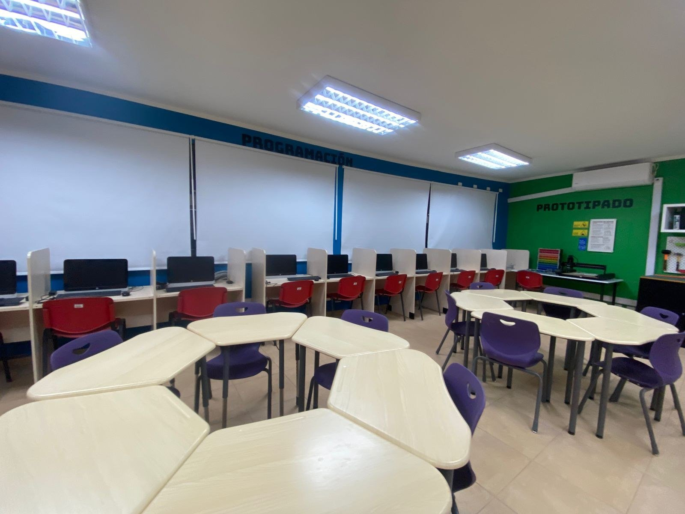
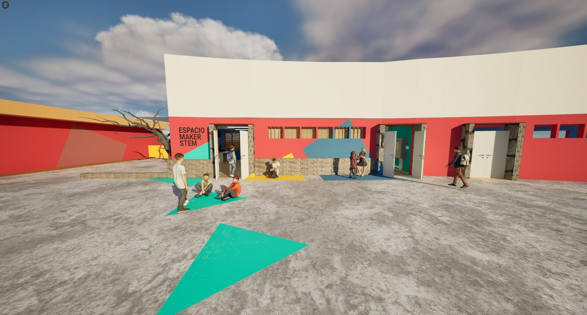
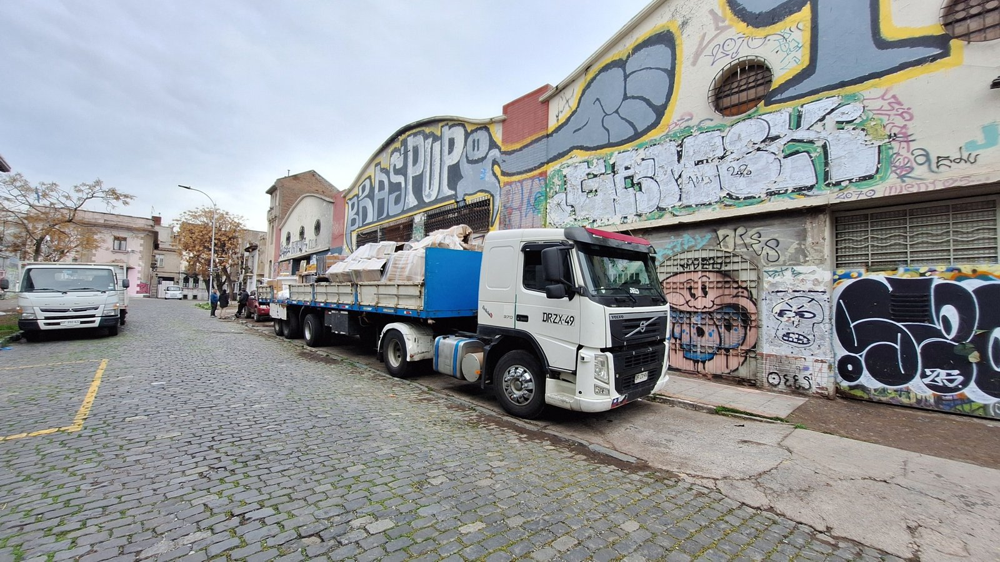
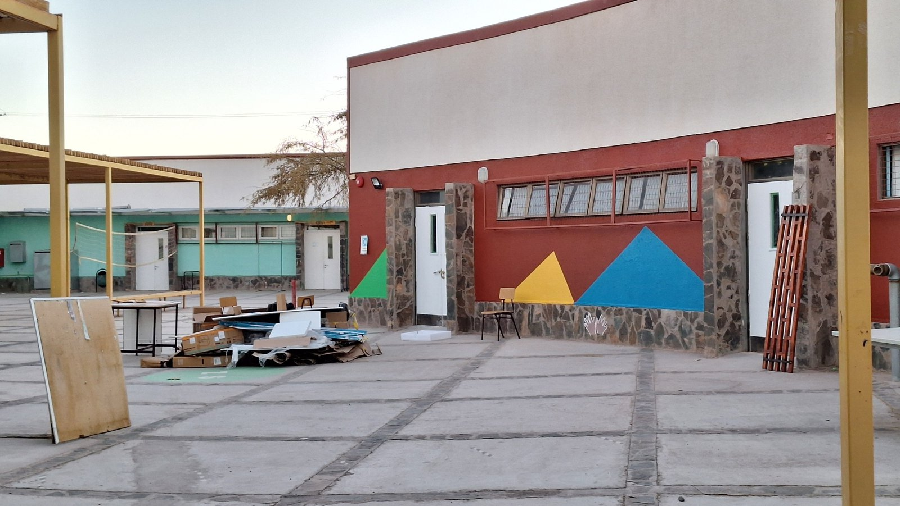
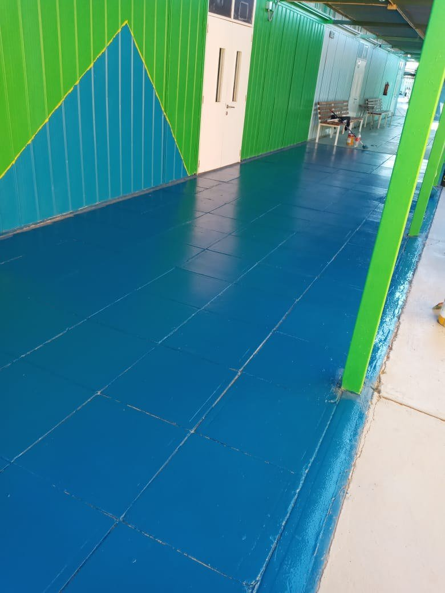
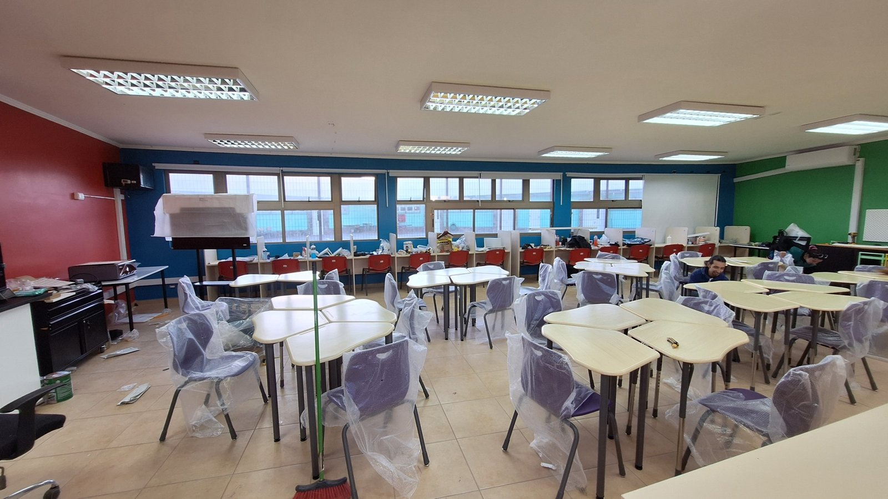
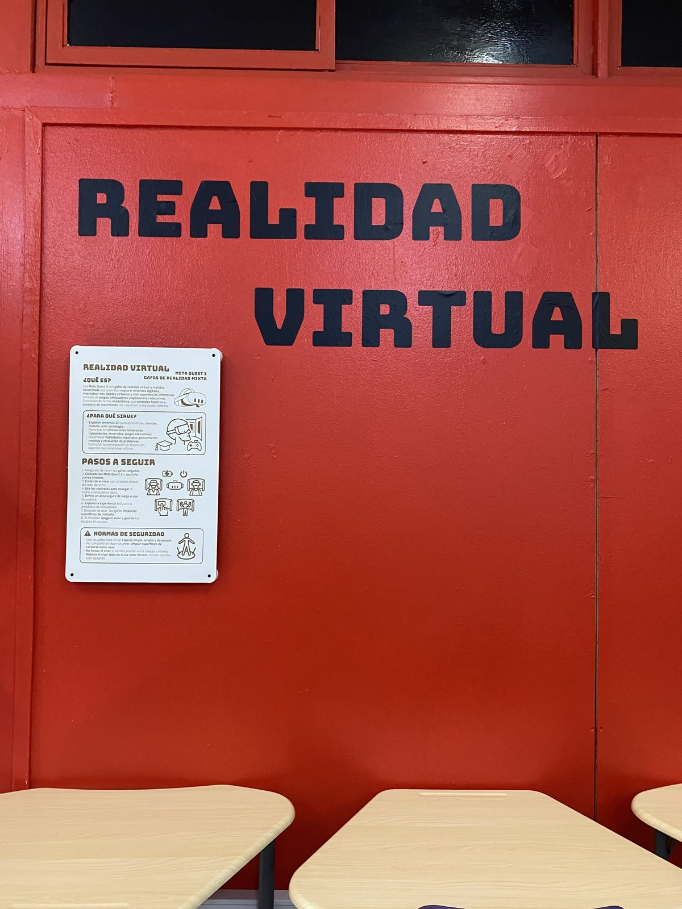
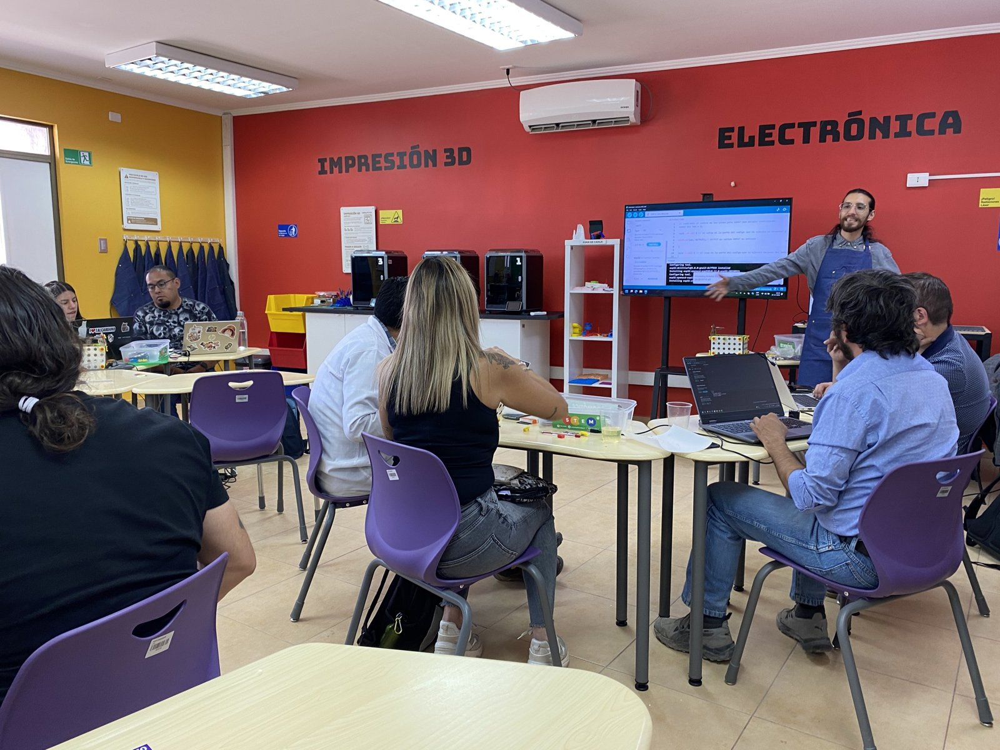
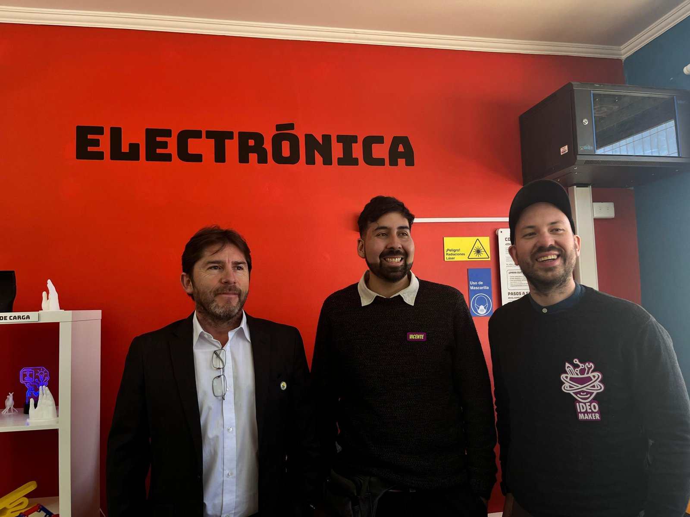

Aulas Impulsa 4.0
Dos aulas maker para liceos de la región de Antofagasta, diseñadas junto a sus comunidades, habilitadas en terreno e inauguradas en septiembre de 2025.

Dos Aulas Impulsa para el programa Impulsa 4.0 de Fundación Chile: una en el Liceo Likan Antai, en San Pedro de Atacama, y otra en el Liceo Técnico Profesional María Elena. El programa lo financian Antofagasta Minerals, BHP, Codelco, Novandino Litio y SQM, y busca acercar a estudiantes y docentes a cuatro tecnologías de la industria 4.0: robótica, realidad virtual y aumentada, programación y prototipado. Ideo Maker ejecutó el proyecto completo, desde el diseño participativo hasta la capacitación de los docentes.
Mi rol
- Diseño de los espacios y modelo 3D en Unreal Engine
- Presupuestos, carta Gantt y logística
- Habilitación en terreno: armado e instalación del mobiliario
- Capacitación docente en las cuatro tecnologías
Equipo Ideo Maker
- Sebastián Higuera
- Patricia Ramírez
- Vicente Cáceres
- Nelson Mora
- Javiera Matus
- Diego López
El co-diseño
La primera etapa fue en terreno, en abril de 2025. En cada liceo hubo una entrevista con el equipo directivo, una feria maker con encuesta a los estudiantes, un focus group con docentes y un levantamiento técnico de la sala. Lo que salió de ahí definió la distribución del espacio, las tecnologías que se compraron y las obras que había que hacer antes de instalar nada.


La habilitación
Ninguna de las dos salas estaba lista para recibir tecnología. En María Elena la red eléctrica tenía pocos puntos, no había climatización y el mobiliario estaba empotrado, así que no se podía reorganizar por estaciones. En Likan Antai la sala era un laboratorio de computación con un solo aire acondicionado, en mal estado. Por eso el proyecto sumó electricidad, climatización y pintura interior y exterior a la compra de equipos y mobiliario. Las salas se pintaron con la paleta de Ideo Maker.





La capacitación docente
Entre octubre y noviembre de 2025 se capacitó a los equipos docentes de los dos liceos en fabricación digital, realidad virtual, programación y robótica educativa. Cada tecnología tuvo dos sesiones presenciales, una actividad asincrónica y una bitácora donde cada docente registró sus prototipos. El orden de los módulos lo pusieron los propios docentes durante el co-diseño, partiendo por lo que podían usar al día siguiente.


Las aulas se inauguraron el 2 de septiembre de 2025 y quedaron con garantía, mantención y acompañamiento técnico y pedagógico hasta agosto de 2026. En 2026 el mismo trabajo siguió en Taltal y Calama.